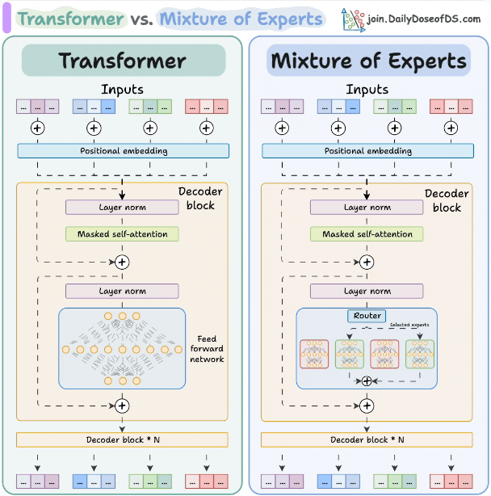
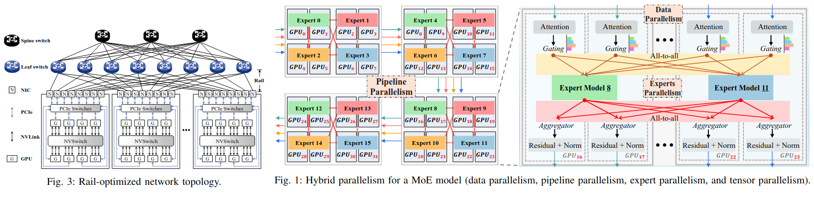

6/21/26, Weekend
This weekend I decided to work at my regular place of work. Seeing the last few weekends of 0.0 hours of productivity & 4.0+ hours of screen-time (see the stat log), I think the unifying reason behind these was that I'm in my apartment. I imagined it might be better if I were to leave the apartment and instead travel somewhere else. I decided my place of work because they have good coffee, and I don't mind the drive because I get to listen to my podcast on the way to work. This system isn't bad, the quiet of the office is nice and I do get a lot of stuff done (yesterday I practically finished the stamp system I started; today there's more to do with it, and I'm excited to work on it some more). The downside of this is the same as the upside: there's no mental separation between "weekend" and "not weekend," so I don't get the "weekend blues" once I realize the weekend is almost over, but I also don't necessarily get "recharged" the same way as if I fully devoted myself towards taking a break (on the other hand, I realized I don't really get recharged even when I do stay at home, so something would need to change regardless). Overall, it's not like I'm thrilled to always be in the office, but I'm not too beat up about it either. I like it here.
6/20/26, Stamps
I was viewing some Neocities websites and seeing some cool designs people came up with, and one particular thing I've been enjoying is stamps, like those found here. These are pretty awesome. I had a feeling of excitement imagining collecting these stamps, or rather earning them, and adding them to some kind of collection. This idea comes from games like Wizard101 which feature an extensive badge system, allowing users to earn badges for doing things like defeating 100 ghosts in Unicorn Way. Actually, the act of collection is in and of itself a kind of "achievement," if you want to interpret it that way. So I think it would be cool to create a kind of achievement system in real life: I assign value to things I find meaningful, then I have an indicator on my website or TODO list or something that says my progress to collecting different achievements, and once I do collect them, I add them to my website in a cute little collection. I think I'll spend this weekend designing this system.
6/19/26, Microsoft Word
My workplace gives us Windows computers to use for work and access to a bunch of tools including the Microsoft 365 suite of programs. My main (personal) computer runs on Arch Linux, which I do enjoy very much and wouldn't trade for anything, but I've really been learning to like the experience of writing within Microsoft Word. The rest of the Windows operating system is just terrible in so many ways, but in only this single regard does it make me enjoy it. The Linux alternative, LibreOffice, doesn't really compare to the feeling of writing some research notes in the Microsoft Word desktop app. When it comes time for me to leave this company in a few short months, I'll admit I'll be a little disappointed I'll be losing access to this tool.
6/18/26, Mixture-of-Experts Tokens
I'm continuing my investigation about mixture-of-experts (MoE) models. I discovered that my understanding of these models was not entirely as high as I hoped. Today I'll describe a small thing I learned yesterday. MoE models have the following structure (taken from here):

An MoE model is only different in the dense feedforward network after the attention block. The attention block does a few matrix multiplications between the tokens and some learned parameters, and it computes a score of "how much each token thinks the other tokens are important." For instance, in the sentence "My name is Sophie and it is a cool word", the token "cool" would view "Sophie" as very important, while the tokens "My" and "is" wouldn't really view each other as important. The attention mechanism stores these "importance scores" in a matrix. After some more math, these "importance scores" are transformed into a vector for each token (i.e., in chatbots/generation, you would have a single token generated from this attention mechanism each iteration of the transformer, and a sentence would be generated after many repeated iterations). This token would then be sent into the feedforward network, and eventually transformed into a generated word.
The feedforward network is where all of the weights are. The difference between an MoE model and a dense (non-MoE) model is that the MoE model simply splits the feedforward network up into a bunch of smaller feedforward networks which ultimately have the same parameter count, so you can have the same "intelligence" without needing to actually do math on all the weights. This technology is seen in popular networks like DeepSeek.
Yesterday, I learned that the input to that feedforward network is actually quite small. Since it only represents a single token, it depends on the size of the hidden state of the network, which is about 7168 in DeepSeek-V4. This means that if the data type is fp16 (2-bytes per data element), then the size of a single token is 14 KB. Not very large! For something that contains so much representational capacity, I would have thought it was much larger than this (but in all honesty, using 7,000 numbers to represent a single word like "Sophie" seems large, so maybe this is a reasonable size).
6/17/26, Time Tracking
Yesterday I did time tracking for the first time in a few years. I had an Obsidian document which contained a bullet-point list of times with a short description on each time. Whenever I changed activities, I would add a new bullet-point. Through this process, I realized:
- I was at the office for 11.5 hours.
- About 9 of those hours were what I would consider to be productive. (This does not imply that each hour of the day attained the same productivity; just that I consciously devoted that time-slice towards doing something productive, as opposed to idly walking around outside, which I did for about an hour of the day. Furthermore, I would allow a minute or two of distraction before officially consider the activity to be "switched", so we can realistically assume the 9 hours has a margin of error of no more than 30 minutes.)
- In my productivity estimation in the stat tracker, it appears I'm accurate enough in retrospect. However...
- Making myself be conscious about the exact time I spend on different activities has made me more productive throughout the day. It made me avoid spending time in some areas and continue spending time in other areas. I'm surprised by how often I lose track of time; minutes on one activity would bleed into an hour, and it would only be during the action of logging would I realize how much time was just spent on that activity.
I think I'll continue this fine-grained time-tracking today. I'll see if it makes me more productive overall.
6/16/26, Network Topology
I started reading the paper RailS: Load Balancing for All-to-All Communication in Distributed Mixture-of-Experts Training. It's partially related to something I'm researching, but I'm unfamiliar with network topologies. The topology is shown on the left, and the use-case the paper explores (Mixture-of-Experts workloads) is shown on the right.

I wouldn't expect the network topology to matter that much here, certainly not more than 10% of the operator performance (this paper achieves more than 70% improvement at times, which is surprising). But it makes sense since the communication collective programs are not really software so much as they are written to be as conformed to the hardware as possible. The software can be mentally interpreted as an extension of the hardware, rather than the hardware being a method of implementing the software as programs are usually interpreted. From this perspective, I can see how something supposedly trivial, like the organization of network switches connecting NICs together, can lead to substantial performance improvements.
I don't really like studying hardware topologies though. I prefer software since it's easier and something I have my education in. Regardless, it's an interesting topic.
6/15/26, Kill Blue
My friend and I are watching the anime "Kill Blue." He described it as being "mid" and "just kind of average but pretty fun," and I agree. It's not remarkable or anything, it's a pretty 6/10 show, but it's enjoyable. It features an assassin who is magically turned into middle-school age, and enrolls into a middle school as part of a job to protect a CEO's daughter. If you're familiar with the broad culture surrounding anime, then this concept might ring alarm bells because of how many anime portray "adult gets turned young again" irresponsibly, but surprisingly, this anime doesn't have any romantic subplots between the main character and any of the young cast (which is good... I definitely wouldn't be watching the show if it did). The "gimmick" is the 40+ year old assassin is enamored by schoolwork and acts like a grown adult, which his classmates think is weird. It's coupled by interesting fight scenes and fun comical moments. I've been enjoying watching it.
6/14/26: Week In Review
I've been thinking it would be nice to write some kind of weekly summary of things I've done, which would offer a natural organization of microblog entries to go under. These weekly entries will be the same level of effort as other microblog entries, just with a combined theme of summarizing the week and preparing myself for the next week. These will be posted on either Saturday or Sunday, and will be aimed at summarizing all week activities beyond what was simply posted in the micro-blog entries.
Blogmode
The previous week was characterized by entering a renewed state of blogmode. I added comments to this website which allows anyone to add thoughts to any blog entry without requiring a login. I also added markdown-ified many different webpages here, which will lead to decreased friction when writing website content. All content on this website is represented in a set of markdown files in my obsidian.md program, with a few utility scripts that manage pushing changes to the github.io.
I've been thinking more about the state of the website, and future very-long-term goals. I recognize that I do have a social media addiction, but in the past ~12 days, I haven't accessed BlueSky/X at all. This is motivating, because I really don't want to be spending too much time on these platforms, and I previously would sink dozens of hours into it each week, scrolling the content as an escape from my present responsibilities. I think a reason I haven't accessed these platforms is twofold: (1) I have this website to satisfy my desire to be seen and heard, and (2) it's easier to continue to not access social media than it is to make the initial stop, so each additional day I don't access it is easier than the previous day.
However, in some ways it would be nice to gain more of a readership. Not necessarily to get big or famous or something, but just because it would be fun. If I don't seek out a readership, then it may be that I develop this blog for years without ever having anyone see it. It's not that I'm expecting any of these micro-blog entries to be read (honestly, I'd be surprised if anyone did read this post; this is more designed for an idle reader to skip to a random entry to see how much effort I put into these, or check if the content here is randomly generated, and feel a momentary feeling of awe in the effort put into this website, than it is for them to actually read it), but it would be nice to build a bit more of a community.
Research
Additionally, I've been doing quite a bit of research. Mostly this research has been centered around my job, which has been proceeding at a steady pace. However, there has been three critical deficits I need to address:
- Improving importance-estimation of tasks: This is something I certainly need to improve on. On Wednesday, I characterized a task as being high importance and worked on it most of the day, when I had another task due Thursday morning which must be completed by that time. However, I was not able to complete the first task; furthermore, I still haven't completed it. The fact I still haven't completed it yet means the task was not actually a high-importance task, and would have better been characterized as medium-importance, so that I could have completed the actual high-importance task faster. This is something I need to get better at.
- Paper reading: I have been very behind on my paper-reading goals! This month I initially set a goal of reading one paper every day, but the paperzone shows I've only read 3 papers. This is discouraging, and I wish I could be more consistent about reading papers. One way of doing this is to ensure paper-reading is considered a high-priority activity, and not doing anything else until paper-reading is complete. That's what I did the first three days, and that's what I must continue to do.
- Extra project incomplete: there is an "extra project" (which I need to be vague about) related to my research which I haven't made any progress on at all. The leader of the project actually contacted me about it a few times in May and I haven't responded to him... it's just there's always things to work on for that project, and I'm discouraged to do it due to the workload. I really do want to be done with it, so I should dedicate time each day to make progress on it.
Goals
In order to address the aforementioned deficits and be successful for this week, I have the following goals:
- Read a paper every day. This is non-negotiable. It would be even nicer to read two papers a day in order to get an average of 30 papers for this month, but just reading one a day would be sufficient.
- Meet vegetable and workout schedule. I have a goal of eating one vegetable a day and work out three times a week. I haven't been doing either of these lately, so I should make a concerted effort to do so.
- Do two hours of work on the extra project every day. This should also be non-negotiable. It must be done! This project really needs to be finished soon, so I'll be sure to devote this energy no matter what.
- Finish a characterization of LLM serving tools. I had an idea to explore different LLM serving tools and characterize their bottlenecks and such in a bigger research-oriented blog post. I think I should really do this soon. It's related to other research that I want to complete (with a scarily-soon deadline, too), so I should aim to finish that this week.
If I can accomplish all four of these goals, I'll be very happy. They're all super attainable, so I just need to do them. I can do them by staying focused and motivated towards my goals. I understand that devoting time in one area has the potential to take away time from another area, but this is necessary in order for me to accomplish my future goals.
Anyways, thanks for reading this summary. Wish me luck for completing everything! I'll make this a weekly habit. Bye bye!
6/13/26: astronaut.io
I discovered a website named astronaut.io. It's pretty interesting, it scrapes YouTube for videos with names like IMG 4819 (which likely means the video came directly from someone's phone without editing) and cycles through them once every few seconds, with Claire de Lune playing in the background. You see a lot of baby videos, videos from families hanging out, and soccer videos, among other things. I think it's interesting, it makes me think about the human experience and how much larger it is than I can imagine.
6/12/26: Additional Structure
I've been looking more into Markdown-ifying more things on my computer. I use Obsidian daily to contain random misc notes, daily notes, and data files for the stats, but there's no structure to some things like meeting notes.
Initially I was imagining fanciful benefits for this, like connecting my notes to an LLM and having it magically tell me insights that I wouldn't have thought of myself, but after thinking about it a bit longer, that's not going to happen. Not only is a LLM not going to give insights I'm not already aware of, but it's also going to take too large of an LLM than what I'm capable of running locally. It may reveal things that I was aware of at one point, but it's very unlikely that, through the process of me writing all these detailed notes, I'm going to write some trend and not realize its a trend. It's better to suggest that formatting these Markdown files in a particular way is for my own mental benefit rather than the benefit of a hypothetical hyper-intelligent LLM. (Once I add enough structured data and write down enough stuff, I might realize that the benefit of LLMs as search-tools is more useful than I'm initially imagining while writing this post, but we'll see as time goes on and more notes are added.)
To these ends, I've created a few file formats for meeting notes, paper notes, and daily notes. These are organized in (name).(ext).md files, where (ext) are currently daily, meeting, and paper. The extent of this structure is just either prepending YAML front-matter to the top of the markdown file, and/or adding named fields/headers throughout the file (i.e., for meeting notes, there are three bullet points named "attendees", "what happened", and "things to do"), while keeping all existing Markdown formatting so it remains readable to me. I think this kind of organization will reduce the likelihood that important things slip through the cracks of my brain, while remaining parseable if a hypothetical LLM does become available and the use-case becomes apparent sometime in the future.
6/11/26: Gherkin and Structured Markdown
Yesterday I got into thinking more about Markdown after reading about the Gherkin language. This is a Markdown-esque language with a bit more structure, which can efficiently represent test-cases and user behavior. For example, while markdown may be capable of expressing a user-action, the lack of structure makes it a bit too free-form to communicate exactly what is meant to happen. Gherkin compensates by adding verbs and organizing things better like the below:
Feature: Account Holder withdraws cash
Scenario: Account has sufficient funds
Given The account balance is $100
And the card is valid
And the machine contains enough money
When the Account Holder requests $20
Then the ATM should dispense $20
And the account balance should be $80
And the card should be returned
The verbs at the start of each line ("Given", "And", "When", and "Then") are reserved keywords. This can be easily translated into a test-case or module in a program. It can also be communicated to someone else while being understandable by both parties.
I've heard this language used in the context of large language models because it's more structured than Markdown, and anything with more structure has greater probability of being less nondeterministic/more replicable. My interests in it are beyond LLMs though, because the benefits it offers to LLMs are the same it offers to me-from-the-future. Future Sophie is just as nondeterministic as an LLM due to having a fuzzy understanding of what Current Sophie is thinking, so adding more structure to typically-unstructured thinking can improve my long-term mental faculties and make it less likely important things slip through the cracks.
(On another note, I was thinking about my main posts page and noticed it was a bit sparse. I think I may want to add titles to these micro-blogs and append them to the posts index so that new readers of this site understand I'm active. I'll add this soon.)
6/10/26
Hi again. Yesterday was alright, I felt a little sick and tired so it was a tiny bit more difficult than most days. Today I got a lot more sleep, so I should be able to recover. Yesterday I did a bit of work on my internship, but didn't really do any experiments outside of work. Tomorrow, I have a meeting with someone that requires some experimentation, so I need to work hard today to make it happen.
Yesterday I went to the store, and it took a looooong time to get home. Like, two hours passed between leaving the office and arriving home. Driving in the city sucks! Lots of foot traffic and winding roads. Though I was able to cook something, so I have dinner prepared for the next few days.
6/9/26
Hello. Yesterday was great; the addition of comments to arbitrary places around the blog is very cool. I was thinking a bit more about it and have imagined a few ways it can be abused though, so I'm excited to implement some more protections. Also, I can think of a few inefficiencies with it (for example, an anonymous token must be generated before the comments are fetched, which is likely unnecessary). I want to add some changes to this to make it better.
In other news, I did some work on thinking of new experiments to study. After work, I created a few front-end scripts wrapping HuggingFace, llama.cpp, and vLLM models with a custom interface I'm planning on using for experiments. After work today, I'll investigate it more: my plan is to create a blog post exploring bottlenecks in these LLM-serving systems and plotting/comparing their characteristics from a utilization perspective. (Preliminary results show that vLLM is substantially faster than llama.cpp for a 1B parameter model on a single GPU, so I'm curious as to why this is.) I have a big day ahead of me, so I'm excited to get started.
6/8/26
Hi. I'm continuing on my blog-brain journey from the 6th by integrating the wonderful Sophie Computer website with comments! As you can see scattered around both in this document and in the guestbook, I've added comment boxes that allow you to anonymously send comments in different places. This comment feature is created using the free tier of Firebase since it offers quite a few features and is easy to work with, and the databases are just plaintext JSON files with some rules preventing abuse. Try it out! And sign the guestbook while you're at it! I'll try to keep the database and web services maintained so there's not just a bunch of broken stuff everywhere, but it should be pretty set-and-forget (hopefully).
The anonymous part is solved using Firebase Anonymous Authentication, which uses some method of signing users in. I'm not sure how, but I didn't like the idea of authenticating people with Google accounts or other stuff. The downside of this is that international readers, or readers in embedded browsers, may not be capable of commenting their own posts. I'll look into more if this is a feasible issue to solve. Another "issue" is that the comments can technically contain forged identities; this isn't really a problem from my perspective, it just means if you see a post by a "sophie" or someone else you may know, just understand that could have been written by someone completely different.
I'll monitor the database occasionally for spam/malicious comments. This might be a good opportunity to use a predictive mini LLM like BERT attached to an automated hook to determine if comments are malicious or not... but that may be too software-engineering brained for now.
This Sophie Computer website project is actually a pilot for another project coming in the next few months... The framework set by this website can largely be repeated in that other project. Stay tuned!!
6/7/26
I was reading two blog posts by my friend Aryl here and here, and went on a tangent reading Catherine Whitequark's lab notebook, and it made me motivated to do more stuff on my website. Specifically, it would be nice to create more experiment-oriented blog posts. I perform a lot of experiments for my PhD and job, so I can combine some of these experiments together into a blog post with a directed goal answering a specific question. I think it would be a good exercise in communication while also producing something that readers can read, that asserts my identity as a scientist/researcher attached to the name "Sophie" instead of my real-life identity which is another name.
To these ends, I created a fancier generalized markdown-to-HTML converter here. I also created some local scripts which automate pushing changes to the website. The goal of this is to make it easier for me to write markdown files that simplify the process of publishing to the website. It might be a nice goal to publish more professionally-formatted things on my website on a regular basis. It might even be nice to attract more of a reader-base as opposed to just friends of mine as readers. This would probably constitute a redesign of my website, too... I'll think about it more.
6/6/26
Yesterday was fine. I met with my boss about the project I'm working on, and he was enthusiastic about it. It's going to be a lot of work to make this project into a full paper, but that's alright. I just need to work hard to make it happen.
Besides that, I also met with my professor about MICRO reviews for two papers we submitted in April. One was rejected, and the other was invited to do a rebuttal. I'm not surprised about the rejection, that was kind of expected. However, the rebuttal went pretty well except for a single review which addressed a core problem we have in our technique that I brought up way back in October of last year. Luckily they didn't complain about the main issue, just something around the main issue, though, so we may still have a chance at making them happy. Fingers crossed!
I also drove about 4 hours yesterday. I hate driving so much, being in a car for so long sucks and is boring. But these things happen, and now I get to hang out with my family a bit today.
6/5/26
Yesterday was fine. I woke up earlier to have a meeting with my advisor and her old student about my research project due in two months. My advisor couldn't make it, but right as the meeting ended, she said she was available, so I just had another meeting with her to talk about the project again. This was fine, I was the one who offered to do it, but it was a bit annoying.
Besides that, I did spend a lot of time listening to my podcast again instead of working. I idly spent about 3 hours in the middle of the day not really doing work, and instead just sitting at my desk looking forward and listening to stuff. An easy way to fix this is to say "if I have a brain-intensive task to do, then shut off the podcast and ensure it doesn't turn on again until the task is done." However, right now I'm in the same position where I would need to do this, and I don't wannaaaaaaa... I want to do other stuff, not work. I actually want to go back to sleep the most. But it's okay. Today I'll be driving after work and will need to be awake pretty late, which I'm not excited for.
6/4/26
Yesterday went well. I did the networking event yesterday. It turns out the head of research wasn't here, he was in another office and we just thought he would be in our city. That's fine though, the rest of the networking event was good. I don't really like socializing, but it's good to build connections with coworkers and improve my confidence about stuff like this.
After the event ended at about 7:30pm, I went back to the office until about 10:30pm and read the paper for the day. I should have read it earlier... I didn't have the most productive day and instead did other things. Not necessarily screentime things, but not productive either. I think one thing I do is listen to too many podcasts: these stunt my productivity in tasks which require my full focus (like reading papers), but are fine to listen to when I'm doing something that cognitively is low-effort (like programming). Today, I think I should temper my podcast-usage so I ensure I finish my necessary tasks sooner.
6/3/26
Yesterday was pretty awesome. I mentioned how I should assign labels to different tasks and ensure the highest-priority task is completed before anything else. I did that yesterday and it worked out really well, I read two papers and did some work on the Physics project I've been procrastinating for a while. I think the important thing to note is that working on something I don't want to work on does make me less productive overall, but also it makes me continue following my goals correctly. If I could have had 100% productivity on another task, it doesn't really matter because the task I actually need completing on is getting 0% complete; it's better to work on that task with 50% productivity because at least it's getting done that way. I'll continue this habit going forward.
Today will be a little weird, there's a networking event my company is requiring we go to. The head of research will be there along with a bunch of other researchers. Not really thrilled about going, but it is what it is.
6/2/26
Yesterday was pretty good in most regards. I met with my manager and we talked about the project I'm working on, and I think we're aligned about the project direction and stuff. I also got a lot of stuff done. I've been listening to a podcast at work, "The Will of the Councel," on the recommendation of my oomf. Listening to podcasts while programming is fine for me because most of my programming work does not take a lot of mental effort, so it tangibly boosts my productivity and allows me to stay working for longer periods of time.
However, I didn't read a paper yesterday. My goal for the month of June was to read a paper every day, so it's a little disappointing to miss it on the first day. I think what I should do is to create a list of priority specifiers (high, medium, low) and attach them to things I need to do, such that things are accomplished strictly in that order. I've been really procrastinating on another research project I've had due for a while, so I should make that and paper-reading as high-priority items for the day, now that I'm ahead on work for my day-job. I'll try that out today and report back tomorrow.
6/1/26
I decided to create a "microblog" section of this website. This contains short snippets which I write every day along with the rest of my stats, so they should be low-effort enough to be consistent with them. Yesterday, I wasn't very productive (see the productivity stat listing a duration of 0.5 hours). However, I realized that if I did want to be productive, then I need to leave my apartment to do it. Every weekend where I exclusively stay within my apartment, I end up not doing a lot of work. It may benefit me to have a more clear separation between a workplace and home, where the workplace is explicitly for work and the home is not for work. My desire to not follow this rule is due to my related desire to get the most work done possible, and being able to work at home means I'm able to forego the cost of travel to a different location, though this isn't working out for me. Thus, I have a new goal: (1) I should aim to leave my house within 1.5 hours of waking up; (2) I should aim to be away from the house until within 3 hours of going to sleep, or according to some other obligation I have to fulfill that takes place at my house or away from my place of work; and (3) I should not force myself to work at home unless the desire strikes naturally. Hopefully this allows me to increase my productivity while mitigating feelings of discomfort and unhappiness that are caused on the weekends due to me not getting stuff done (see my mood stat log).